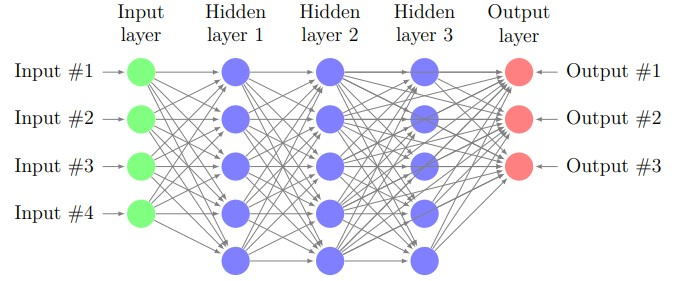

HYY Home
|
Hao-Yang Yen

Experience
|

Learning
|

Research
|

Explore
|
Renormalization Group in Machine Learning
I worked on project in 2023 fall.
Abstract
In the phase transition theory, the correlation length diverges to infinity at the
critical point which leads to many physical phenomena. We can use the mean-field
theory and renormalization group theory to analyze these phenomena. But actually,
similar phenomena happen not only in the phase transition but in many natural
complex systems. Moreover, in these complex systems, people often use statistics to
build the mathematical model. The neural network framework is a kind of algorithm
that can be applied to justify which categorical data an individual belongs to. This
process is similar to using the renormalization group theory to compute which phases
a system belongs to. Therefore, although the precise mathematical structure hasn’t
been built yet, we believe that the neural network framework can be viewed as the renormalization group theory.
Neural Network
-
Framework of Model
First, I use the neural network model as an example for the reason that it’s a highly
abstract mathematical model so that it can be extended to other models more easily.
The fundamental structure of a neural network framework has three parts, an input
layer, several hidden layers, and an output layer. Which can be expressed as a figure
below.

This is a neural network having three hidden layers.
Let four input signals be
\(x_1, x_2, x_3\)
, and \(x_4\) the first layer would output
\(a^{[1]}_1,a^{[1]}_2,a^{[1]}_3,a^{[1]}_4,a^{[1]}_5\)
to the second layer, the signals \(a^{[1]}_i\)
are computed by the process below and with parameters weight : \(weight:\;W^{[1]}_{ij},\;bias:\;b^{[1]}_i\)
and the activation function \(g\), where the index \([i]\) denotes the parameters for \(i^{th}\) hidden layer
\(a^{[1]}_1=g(x_1 W^{[1]}_{11}+x_2 W^{[1]}_{21}+x_3 W^{[1]}_{31}+x_4 W^{[1]}_{41}+b^{[1]}_1)\\
a^{[1]}_2=g(x_1 W^{[1]}_{12}+x_2 W^{[1]}_{22}+x_3 W^{[1]}_{32}+x_4 W^{[1]}_{42}+b^{[1]}_2)\\
a^{[1]}_3=g(x_1 W^{[1]}_{13}+x_2 W^{[1]}_{23}+x_3 W^{[1]}_{33}+x_4 W^{[1]}_{43}+b^{[1]}_3)\\
a^{[1]}_4=g(x_1 W^{[1]}_{14}+x_2 W^{[1]}_{24}+x_3 W^{[1]}_{34}+x_4 W^{[1]}_{44}+b^{[1]}_4)\\
a^{[1]}_5=g(x_1 W^{[1]}_{15}+x_2 W^{[1]}_{25}+x_3 W^{[1]}_{35}+x_4 W^{[1]}_{45}+b^{[1]}_5)\)
We can write parameters as matrices and vector
\(\bf{W}^{[1]}=\begin{pmatrix}
{W}^{[1]}_{11}&{W}^{[1]}_{12}&{W}^{[1]}_{13}&{W}^{[1]}_{14}&{W}^{[1]}_{15}\\
{W}^{[1]}_{21}&{W}^{[1]}_{22}&{W}^{[1]}_{23}&{W}^{[1]}_{24}&{W}^{[1]}_{25}\\
{W}^{[1]}_{31}&{W}^{[1]}_{32}&{W}^{[1]}_{33}&{W}^{[1]}_{34}&{W}^{[1]}_{35}\\
{W}^{[1]}_{41}&{W}^{[1]}_{42}&{W}^{[1]}_{43}&{W}^{[1]}_{44}&{W}^{[1]}_{45}\\
\end{pmatrix},\)
\(\bm{x}=\begin{pmatrix}
x_1\\
x_2\\
x_3\\
x_4
\end{pmatrix},\;\bm{a}^{[1]}=\begin{pmatrix}
a_1^{[1]}\\
a_2^{[1]}\\
a_3^{[1]}\\
a_4^{[1]}\\
a_5^{[1]}
\end{pmatrix},\;\bm{b}^{[1]}=\begin{pmatrix}
b_1^{[1]}\\
b_2^{[1]}\\
b_3^{[1]}\\
b_4^{[1]}\\
b_5^{[1]}
\end{pmatrix}\)
then the computational process can be written as
\(\bm{a}^{[1]}=g(\bf{x}\bf{W}^{[1]}+\bm{b}^{[1]})
\)
Then, \(\bm{a}^{[1]}\) inputs to the second layer and output \(\bm{a}^{[2]}\), that is
\(\bm{a}^{[2]}=g(\bm{a}^{[1]}\bf{W}^{[2]}+\bm{b}^{[2]})\)
. Similarly, \(\bm{a}^{[2]}\) inputs to the second layer and output \(\bm{a}^{[3]}\), that is
\(\bm{a}^{[3]}=g(\bm{a}^{[2]}\bf{W}^{[3]}+\bm{b}^{[3]})\)
The final output is
\(\bm{z}=g(\bm{a}^{[3]}\bf{W}^{[4]}+\bm{b}^{[4]})\)
Generalize this process to any dimension of parameters and numbers of layers $n$, it could be written as
\(\bm{a}^{[i+1]}=g(\bm{a}^{[i]}\bf{W}^{[i+1]}+\bm{b}^{[i+1]})\)
, where \(\bm{a}^{[0]}=\bm{x}\) and \(\bm{a}^{[n+1]}=\bm{z}\).\\
There are many kinds of activation functions, in this report, I use
\(g(\bm{z})=\frac{1}{\sum_je^{z_j}}\begin{pmatrix}
e^{z_1}\\
e^{z_2}\\
\vdots\\
e^{z_n}
\end{pmatrix}\)
, where \(n\) is the dimension of the layer output.
-
Training Model
We can see that if the parameters \(\{\bf{W}^{[k]},\bm{b}^{[k]}\}_k\) are all determined, then the model is determined, too.
So now the question is how to determine the parameters, that is, how to train the model.
If we have a training set, we can see parameters \(\{\bf{W}^{[k]},\bm{b}^{[k]}\}_k\) are the best ones if the prediction error is minimized.
The prediction error can be defined as a loss function $\mathcal{L}$, this function is selected by the objects we want to predict.
Here we select \(\mathcal{L}=cross\;entropy\) which is a function often used to justify the prediction error for categorical data.
So now we only need to find which parameters \(\{\bf{W}^{[k]},\bm{b}^{[k]}\}_k\) minimizes \(\mathcal{L}\),
this problem can be solved by many methods such as gradient descent method. In this report,
we use the backward propagation method to train the model. Since the method used isn't associative with the topics,
I do not discuss too much about it here.
Renormalization Group
I believe that the pruning of the neural network can be interpreted by the physical
interpretation of the renormalization group. I would use some numerical experiments
to explain this statement. I use the R language to build the neural network model,
for it’s more convenient to see more statistical data and compute some statistical
quantity
-
Samples at the Critical Point
Recall that the renormalization group theory provides us a way to analyze the physical phenomena near the critical point,
but actually, the concept of critical phenomena also appears in many natural systems.
We use a numerical method to provide the critical phenomenon a statistics interpretation.
I use a classical data set \(\bm{iris}\) in R as an example, we use the neural network to predict the categorical data \(\bm{Species}\).
Before explaining the neural network is a kind of renormalization group,
we need to explain what does critical point means for the samples in the data set.
Let's visualize the predictors. First plot the scatter plots between the continuous predictors (Figure 1).
We can see that some predictors have a significant correlation with the response.
Moreover, some predictors have a significant correlation with other predictors, too.
Considering there are 150 individuals in the data set and the randomness of sampling, we can believe that the parameters can have the predictors have such correla�tion in every individual. So we can say that even if sepals and petals are only small
parts of the iris, they still highly correlate with other characters of the individuals.
This is why we could say the samples are at a critical point.
-
Neural Network as the Renormalization Group
We have interpreted why the samples are at the critical point in the previous section.
We can start to explain that the process of neural networks is a kind of renormalization group.
But before explaining the relation between them, we use the neural network to predict the \(\bm{Species}\)
of the individuals in \(\bm{iris}\) first.
-
Self-Similarity in the Neural Network
To build a neural network model, we split the data set into a training set and a test
set, and use the training set to train the model to get a model having minimized
loss function in the training set. Then, we choose this model as the optimized model
for predicting data. Then we use the model to predict the data for the test set. We
draw the confusion matrix and compute the prediction accuracy in the test set to
see the prediction ability of this model.
\(Accuracy=\frac{27}{30}=90\%\)
We have a \(90\%\) accuracy in the test set, so we can say that this model has a good prediction ability for this data set. Then we can discuss why it works.
This method is similar to neglecting the irrelevant parameters in the renormalization group theory.
Recall the method we used in the renormalization group theory, now the question is if the neural network algorithm uses
the self-similarity of the predictors to predict the response.
We can use the following results to interpret that neural network is based on this principle.
This statement can be verified easily by using the outlier to train the model, then the accuracy would significantly decrease.
The sample size of this data set isn't large enough, we don't have enough outliers.
Therefore, we use the \(\bm{runif}\) function to generate the random numerical value in the range of each parameter. And use these values as sixty new "individuals" as the outlier and replace some individuals in the training set. The accuracy decreases significantly.
\(Accuracy=\frac{27}{30}=63.3\%\)
-
Interpretation of the Neural Network
Therefore, we can interpret the statistical meaning of the neural network, recall the process
\(\bm{a}^{[i+1]}=g(\bm{a}^{[i]}\bf{W}^{[i+1]}+\bm{b}^{[i+1]})\)
the irrelevant parameter would be weakened by the small weight and the relevant parameters would be strengthened by the big weight,
then the activation function
\(g(\bm{z})=\frac{1}{\sum_je^{z_j}}\begin{pmatrix}
e^{z_1}\\
e^{z_2}\\
\vdots\\
e^{z_n}
\end{pmatrix}\)
would give the larger value for the relevant parameters. Moreover, the form looking like a Boltzmann distribution is used to regularize,
the goal of this process is the same as rescaling in the renormalization group theory theory,
with this process, the parameters would have the same form in every layer.
Moreover, this process can make the output parameters in the domain \((0,1)\) to avoid the parameters diverging.
Generally, the relevant parameters would flow to the three fixed points \((1,0,0),\;(0,1,0),\) and \((0,0,1)\) which correspond to three categories, and the irrelevant ones would be neglected. Like what is shown in the following table which is a part of the prediction output.
Futher Idea
If we believe that the neural network is indeed a kind of renormalization group and there is a precise corresponding relation between them, then we can build a relation between statistical mechanics and other research fields.
-
Application in Statistics
We can provide the renormalization group theory a more make-sense interpretation and many concepts in the renormalization group theory to other research fields such as biostatistics and computational sociology. Moreover, many numerical renormalization group algorithms that have been developed can be applied to the machine learning theory.
-
Realization of Brain Dynamic in Biophysics
Since the neural network framework is an abstract mathematical model of brains, the renormalization group theory can provide a statistical mechanics model for learning. It could help us understand how the brains work.
-
Precise Mathematical Structure in Machine Learning Theory
Even if the neural network is a big success now, the mathematical structure of the framework isn't very clear yet, if we can build a corresponding relation between them, the mathematical structure of the renormalization group theory can provide the neural network framework a more precise mathematical description.
References
[1] Pankaj Mehta, David J. Schwab, An exact mapping between the Variational
Renormalization Group and Deep Learning ,
[2] Cédric Bény, Deep learning and the renormalization group,
[3] Dietmar Plenz, The Critical Brain, Section on Critical Brain Dynamics, National
Institute of Mental Health, NIH, Bethesda, MD 20892, USA April 22, 2013•
Physics 6, 47